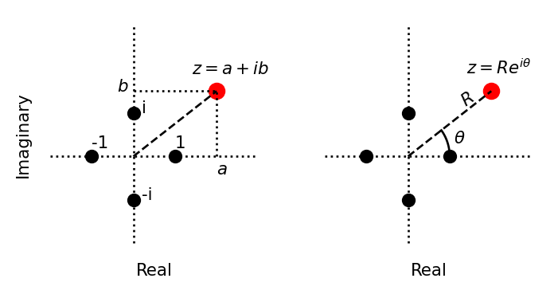
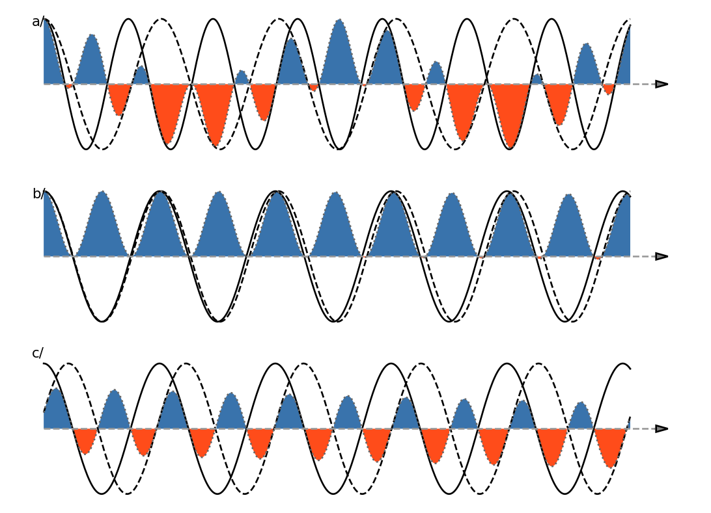
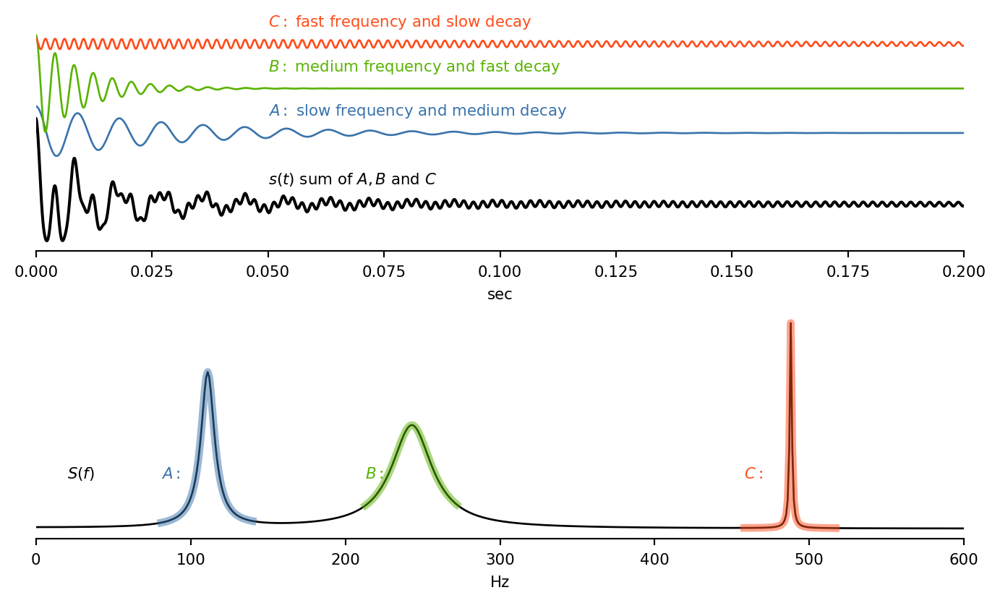
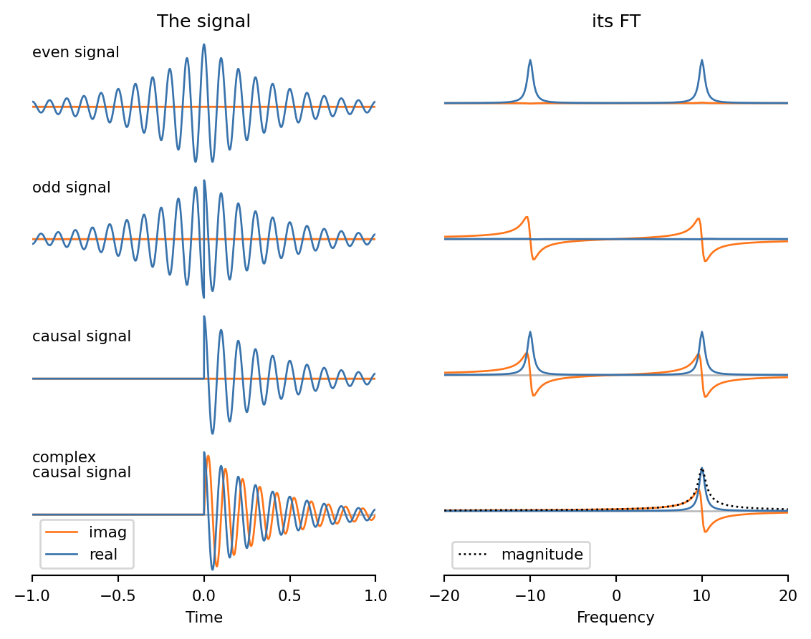
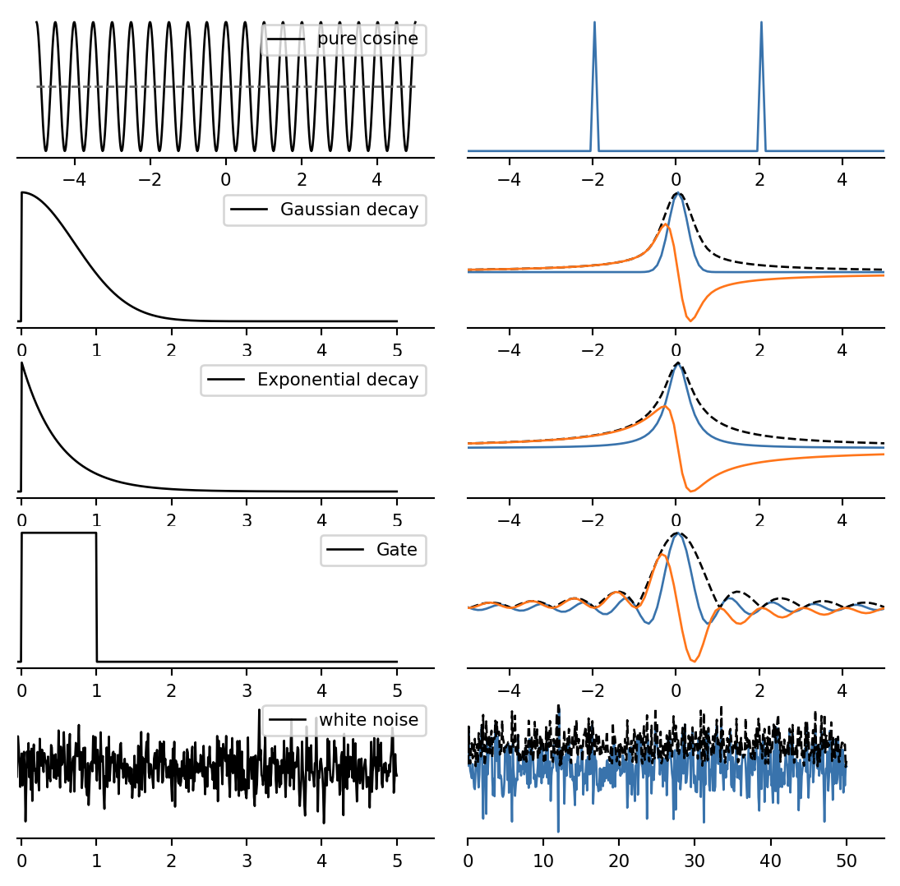
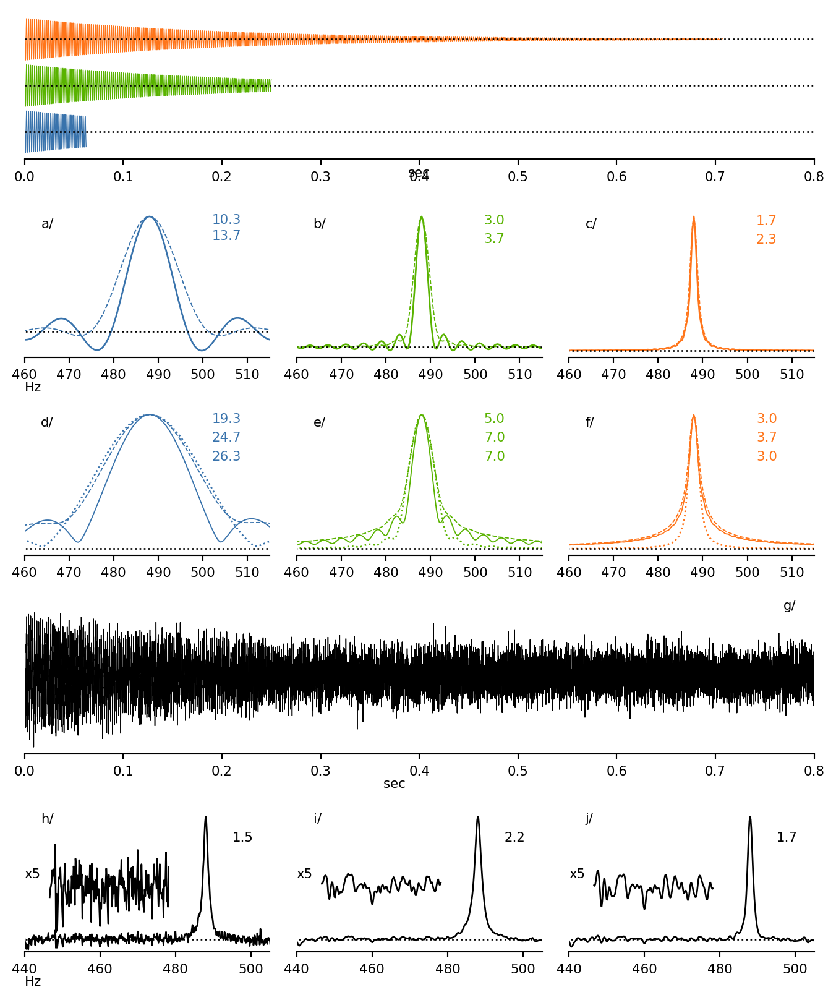

The Fourier Transform in Analytical Chemistry
Abstract
Numerous data analysis methodologies heavily depend on the Fourier transform (FT), especially within analytical chemistry. FT is an incredibly potent and versatile tool, significantly influencing various scientific disciplines. Despite its prominence, FT often shrouds itself in an enigma for many. In response, we endeavour to provide an all-encompassing elucidation of FT, crafted to be comprehensible even to those not versed in advanced mathematics. This exposition embraces FT’s theoretical underpinnings and practical applications, seeking to demystify this concept. Its utility is demonstrated through examples in diverse domains, such as Mass spectrometry, Nuclear Magnetic Resonance (NMR), Infrared spectroscopy, and various other analytical techniques. Furthermore, potential extensions and applications of FT are explored, evoking the potential future developments of this formidable analytical instrument. We aim to empower novice and seasoned researchers with the knowledge and insight needed to harness FT’s transformative capabilities in their scientific pursuits.
Introduction
The Fourier Transform (FT) is a fundamental technique for analysing signals that are generally dependent on time or space (but any other parameter is possible). It transforms a signal from the time or spatial domain to the frequency domain, revealing the frequency components that make up the signal. The FT has revolutionized spectroscopy, allowing scientists to measure and analyse spectra with unprecedented accuracy and precision.
In analytical science, the FT can be used to analyse spectroscopic data from a variety of techniques, such as infrared, mass spectrometry, and nuclear magnetic resonance spectroscopy. By decomposing the signal into its constituent frequencies, one can separate specific lines, identify specific chemical compounds and quantify the amount of each compound present in a sample thanks to its linear response. The FT also brings a gain in resolution and sensitivity compared to classical scanning techniques thanks to better exploitation of the experimental time1.
Therefore, we present in this review the theoretical and practical aspects essential for a better understanding and usage of analytical chemistry techniques.
Background theory
The fundamental breakthrough behind the Fourier Transform came from the theory of heat distributes and flows in solids2,3. It was observed that, although in many cases the differential equation could not be exactly solved, the solution could be expressed as a sum of an infinite number of simpler periodic functions, and that an arbitrarily good solution could be found by taking a pre-chosen finite number of those functions. This concept that an infinite sum of simple equations could effectively solve a very complex equation, to as accurate a solution as you want, is incredibly important and core to many, if not most, of the solutions in modern mathematics, physics, chemistry, engineering, medicine, and technology. It is a perfect example of how basic, fundamental science can often have profound effects throughout the sciences well beyond the initial scope of the project and a keen reminder that basic science is where the big, long-term impacts come from.
In Fourier’s case, the solution to heat diffusion within a solid was an infinite series of sinusoidal functions which were bound to the temperatures at the physical edges of the solid, which later became known as the Fourier series. This concept, if considered in the opposite direction, also means that the solution to the equation is a sum of a set of “signals” of carefully defined frequency, phase, and amplitude, which became the foundation of what is today known as the Fourier Transform (FT).
The FT is actually extremely common to see in real life. Diffraction patterns of sea waves entering a harbour or rainbows reflected from a body of water or rain droplets are a filtered and distributed set of sinusoidal waves. The classic cinematic effect of wheels or propellers appearing to stop and start to rotate backwards as they speed up is an expression of the Nyquist criterion discussed below in Section 2. The star-like diffraction patterns that you see when looking at distant lights at night is due to the errors in the Nyquist discretization of the signal by the light sensitive cells on the retina of your eye, which is effectively a biological digitization of the signal. Many, if not most, real-world physical phenomena are expressible as a series of a discrete set of periodic functions.
Sine and Cosine
Periodic systems are naturally described with the sine and cosine functions. They are both periodic with a period of \(2\pi\). As an example, the time evolution of the position \(x\) of a pendulum oscillating slightly around its rest position with a period \(P\) is described by \[x = a \sin (2 \pi \frac t P) \tag{1}\] or \[x = a \sin (2 \pi f t ) \tag{2}\] where \(f\), the inverse of the period, is the frequency of the oscillation, expressed in sec-1 or Hz.
Complex numbers, the complex plane, phase and magnitude
Complex numbers are an alternate way of describing rotation and are widely used in FT theory. They are an extension of the classical (real) numbers, by adding the imaginary number \(i\) defined such as \(i^2 = -1\), something which is not possible with classical numbers. Multiples of \(i\) are imaginary numbers, and complex numbers (usually noted \(z\)) are the sum of a real and an imaginary number: \[ z = a + ib \tag{3}\] where \(a\) and \(b\) are real numbers. Any complex value \(z\) has a conjugate value, noted \(z^*\) defined as: \[ z = a + ib \qquad z^* = a -ib \tag{4}\] Complex numbers can be added and multiplied using natural rules as follows: \[z_1 + z_2 = (a_1 + a_2) + i (b_1 + b_2) \tag{5}\] and \[z_1 \times z_2 = (a_1 a_2 - b_1 b_2) + i (a_1 b_2 + b_1 a_2) \tag{6}\]
These quantities can be very simply represented on a plane, as illustrated on Figure 1. From this diagram, an alternative expression of \(z\) in terms of modulus \(R\) (or length) and its angle \(\theta\) comes naturally.
\[z = a + i x = R (\cos \theta + i \sin \theta) \tag{7}\]
Euler formula
The following expression known as the Euler formula, plays a central role: \[\exp (ix) = \cos x + i \sin x \tag{8}\] or \[e^{ix} = \cos x + i \sin x \tag{9}\]
Putting an imaginary number as the exponent might seem a little strange, however the potential of this formula lies in the easy expression of the geometric interpretation of complex numbers presented in Figure 1.
\[z = R (\cos \theta + i \sin \theta) = R e^{i \theta} \tag{10}\]
which greatly simplifies the expression of conjugation and complex multiplication:
\[z = R e^{i\theta} \qquad z^* = R e^{-i\theta}\] \[z_1 \times z_2 = R_1 R_2 e^{i(\theta_1 + \theta_2)} \tag{11}\]
where we see that the moduli are multiplied, while the angles or added. Thus multiplication by a complex number of modulus 1 and angle \(\phi\) simply applies a rotation by this angle \(\phi\), allowing a very simple expression for plane rotations around the origin.
Experimentation
Definitions and properties
Overlap properties
The Fourier transform is effectively a calculation of the overlap integrals of a signal with a set of pre-chosen sine waves. Imagine a time signal \(s\) composed of a pure sine evolution from 0 to 5 seconds, with the frequency \(F_o\), as shown in solid black in Figure 2. The multiplication of this signal \(s\) by a second sine function with another frequency (in dashed black in Figure 2) creates a complex evolution shown in dotted black. The area under this resultant curve (the blue minus the red in the figure) is close to zero because the positive and negative areas nearly cancel each other. On the other hand, multiplying with a frequency close to the frequency of the signal \(s\), as in Figure 2 b/, results in a large positive area.

The integral definition of the FT
The property described above enlightens the classical definition of the FT. Assuming a signal described by the function \(s(t)\), its spectrum is given by the FT as a function of the frequency \(S(f)\) (here we’ll use the case of the letters to denote the pair made by a function and its FT), and is given by:
\[ \text{FT}[s(t)] = S(f) = \int_{-\infty}^{+\infty} s(t) e^{-2i \pi f t} dt \tag{12}\]
where \(f\) is the frequency (expressed in Hz for instance). \(S(f)\) is usually called the Spectrum of \(s(t)\). It is important to note that the frequency \(f\), like the time \(t\) in Equation 12, goes from \(-\infty\) to \(+\infty\).
The expression under the integral sign performs the computation seen in Figure 2. The signal \(s(t)\) is multiplied by a complex wave of frequency \(-f\) ( remember the Euler notation in Equation 9 ), the figure displaying only the real part of the term. The integral symbol expresses the computation of the (signed) area under the curve over the signal (the infinities in the expression are the formal mathematical expression, but the measurement time is of-course finite). As in Figure 2 b/ the resulting function \(S(f)\) presents a maximum for every frequencies present in \(s(t)\). Because of the imaginary exponent, the \(S(f)\) spectrum has complex values, in cases such as Figure 2 c/, the value of the integral is mostly imaginary. For this reason, the spectrum is usually presented in magnitude when the phase of the signal is unknown.
In symmetry, the time signal \(s(t)\) can be real or complex with no change in the definition, in certain experimental, NMR in particular, the measure is indeed complex, with some implication on the experimental set-up.
The great strength of the FT is that it is fully invertible, meaning that you can also compute \(s(t)\) from \(S(f)\), with FT-1() differing from FT() only by an inverted sign:
\[ \text{FT}^{-1}[S(f)] = s(t) = \int_{-\infty}^{+\infty} S(f) e^{2i \pi f t} df \tag{13}\]
Worked example
With the definitions above, we can now compute the FT of a signal. Let us posit a signal composed of \(K\) different components with different characteristic frequencies \(f_k\) and amplitudes \(A_k\), starting at time \(t=0\) with a phases \(\phi_k\), and decaying with different time constants \(\tau_k\). This signal \(s(t)\) can be written in complex notations as: \[s(t) = \sum_k^K A_k e^{-\frac t {\tau_k}} e^{ i (2\pi f_k t + \phi_k)} \tag{14}\] Note that the signal components can reorganized as the product of a time independent term and a time dependent term, both of them complex, as follows: \[s(t) = \sum_k^K A_k e^{i\phi_k} \; e^{t (-\frac 1 {\tau_k} + i 2\pi f_k ) } \tag{15}\] The time independent term \(A_k e^{i\phi_k}\) is the complex amplitude of the compnent, while the complex value \(e^{(-\frac 1 {\tau_k} + i 2\pi f_k )}\) which acts on the time, fully caracterizes the time evolution.

Figure 3 shows the real part of this signal with three components, along with the real part its spectrum \(S(f)\) (check Figure 4 and the associated discussion for a description of the imaginary part of the spectrum). The lower panel shows the result of the FT of this time signal. We can see the three frequencies well separated in the spectrum. The longest running component (red, high frequency) has a sharp profile in the frequency spectrum, whereas the other components give rise to broader lines because of faster decays.
It should be stressed that FT analysis makes the central assumption that frequencies in the signal are not varying.
The example presented here is typical of signals measured from a source where all signals have a defined phase at the origin (here chosen to be null) and have an amplitude which decays away from this origin. This is the case in excitation methods such as NMR or FTMS, as well as in interferometry. In contrast, signals originated from audio, EEG, or environmental measurements do not usually have a clear \(t=0\) origin or a well defined envelop, and their FT requires additional steps for obtaining a correct spectrum.
Reciprocal domains
The main effect of the FT is to compute an alternate view of the data-set. In the example above, the time signal, expressed in seconds, produces a frequency spectrum in Hz (which is defined as sec-1). The same kind of relation can be found in all experimental methods relying on FT.
| Analysis type | Experimental method | Original signal (units) | Transformed signal (units) |
|---|---|---|---|
| Frequency analysis | NMR, FTMS | Time (sec) | Frequency (Hz) |
| Interferometry | FTIR | Wavelength (μm) | Fringe count (cm-1) |
| Crystallography | XRD | Diffraction pattern (Å-1) | electron density map (Å) |
For this reason, these two ways of representing the data are called reciprocal domains. Because the FT by itself does not remove nor add any information to the data, these two representations can be seen as two different views of the same information, as if related by some kind of rotation around a mysterious axis, in a high dimensional space. This “rotation” aspect of the FT is even reinforced by the fact that Equation 12 and Equation 13 are related by a sign inversion, as would a rotation and its inverse be related on the 2D plane or 3D space.
The Digital FT
Uniform data sampling
So far, we have considered only continuous signals described by continuous functions. However, this signal is usually sampled and digitised in order to be handled numerically in a computer system. At this stage, we will only consider a regular sampling, characterised by a periodic sampling every \(\Delta t\) or by its sampling frequency \(F_S = \frac{1}{\Delta t}\). With such a sampling, \(F_{max}\), the Nyquist criterion states that the largest frequency in the signal that can be faithfully recovered is only half of the sampling frequency.
Signals with a frequency greater than \(F_{max}\) cannot be analysed correctly and will appear folded back ( or aliased ) into the \([ 0..F_{max} ]\) window. (Think of a signal with a frequency close to \(F_S\), if we only have the sampled points, it is not possible to discern from a slowly varying one). This frequency window defines the measure spectral width \(SW\).
The spectral width \(SW\) is related to the sampling rate: \[ SW = \frac{1}{2 \Delta t} \qquad \text{or} \qquad \Delta t = \frac{1}{2 SW} \tag{16}\] Equation 16 is known as the Nyquist-Shannon theorem, and the rate \(\Delta t\) is called the Nyquist sampling rate.
The Discrete Fourier Transform
FT, as Equation 12, can produce the spectrum of a sequence of regularly spaced samples over a given time by using the definition above. However, this would produce a continuous function expanding to infinity that a computer cannot handle easily.
It is possible to represent this spectrum with a sequence of values \(S_k\) of the same length as the initial dataset, regularly sampling the continuous spectrum with a spacing \(\Delta f\).
The Discrete Fourier Transform (or DFT) is the numeric operation which transforms the sampled (discrete) series into its discrete spectrum. It is equivalent in many points to the analytical FT and shares most of its characteristics, with the notable exception of the Nyquist theorem presented above, a property of the sampling operation, not of the FT itself.
The operation is linear and can be expressed as a multiplication of the initial dataset with a \(N \times N\) square matrix. For a sequence \(s_n\) of length \(N\), its DFT \(S\) is a series given by : \[S_k = \frac{1}{\sqrt N} \sum_{n=0}^{N-1} e^{-2i\pi \frac{kn}{N}} s_n \tag{17}\]
\(S\) and \(s\) are complex series, but the imaginary component of \(s\) may well be null. This expression is invertible, its inverse being simply defined as: \[s_n = \frac{1}{\sqrt N} \sum_{n=0}^{N-1} e^{2i\pi \frac{kn}{N}} S_k \tag{18}\]
The \(\sqrt N\) coefficient is a simple scaling factor which insures the symmetry of the expressions.
If we acquire \(N\) real points with a sampling \(\Delta t\) given by Equation 16, we have a total acquisition time of \(T_{max} = N \times \Delta t\). Similarly, we have \(SW = F_{max} = N/2 \times \Delta f\). The 1/2 comes from the fact that there are two values for each frequency (real and imaginary) because the Fourier spectrum is complex. Combining these two expressions with Equation 16, it comes: \[\Delta f = \frac 1 {T_{max}} \tag{19}\] which tells that the digital resolution of the spectrum is related to total acquisition time. This relation is the equivalent of the Nyquist theorem for the frequency spectrum. It is not a coincidence if this expression, in the form \(\Delta f \times T_{max} = 1\) is reminiscent with the Heisenberg uncertainty principle, and is sometimes called the Fourier uncertainty principle.
Fast Discrete Fourier Transform
The expression given above in Equation 17 for DFT is a matrix multiplication. The computer burden for computing such an expression for a series of \(N\) values is proportional to \(N^2\). This would be a problem for the computation of large series without the clever algorithm proposed by J. Cooley and J. Tukey4, which computes the same expression with a burden that grows only in \(N \log_2 N\).
This algorithm, called Fast Fourier Transform (or FFT), uses subtle properties of the coefficients in Equation 17 and factorizes the problem on the divisors of the number of points \(N\). So it is optimal for \(N\) values equal to a power of 2 and just as slow as the regular DFT when \(N\) is a prime number. For this reason, it is customary to choose a power of two for the size of datasets meant to be FTed, even though most modern algorithms can accommodate nearly any value of \(N\).
Thanks to FFT, it is possible on modern computers to compute the FT of datasets containing millions of points in milliseconds.
Results
FT properties
The FT, as well as the DFT, its computer counterpart, possesses many properties, very useful for data analysis. Box 1 goes through a rapid survey of the most useful ones and point out their implications with the analysis process, most of these properties can be observed in the Figure 3 example.
Insert BOX 1 HERE
Symmetry properties
A FT spectrum is always a complex object. Symmetries in the data impact the real and imaginary parts of the spectrum as shown in Figure 4. Data symmetric relative to \(t=0\) will present a spectrum with a null imaginary part, whereas antisymmetric data will have a null real part. This is a result of the symmetry presented by the underlying sine and cosine functions, such that \(f(t) = (f(-t))^*\) (symmetry of a Hermitian function ).

These symmetry relationships can be summerized as follows:
| direct domain | reciprocal domain |
|---|---|
| pure real | symmetrical real part antisymmetrical imaginary part |
| pure imaginary | antisymmetrical real part symmetrical imaginary part |
Many more symmetry properties can be found from these simple rules by using the linearity of the FT.
This has a strong impact on data acquired from a system which requires some initial perturbation (such as the Radio-Frequency pulse in NMR or the injection from the C-trap in Orbitrap); this kind of signal is called causal because of the event which creates them. In these spectra, the spectrum’s real and imaginary parts are linked, presenting a pair of related shapes. In Figure 4 you see such a pair for a signal exponentially decaying after excitation. In the case of a null initial phase, the real part is a symmetric line shape called absorptive, and the imaginary part is antisymmetric and called dispersive. They are related by the Hilbert transform. The absorptive shape is narrower than the dispersive one thus displaying a higher resolution. This implies that a magnitude spectrum, where \(S\) is replaced by \(\sqrt{Re(S)^2 + Im(S)^2}\) - something you might have to do if the phase of the signal is unknown - presents a FWHM (Full Width at Half Maximum) about twice as large.
Convolution theorem
The convolution is an operation (noted \(\star\)) on two functions (\(f\) and \(g\)) that produces a third function (\(f \star g\)) that expresses how the shape of one is modified by the other. It is formally defined as \[(f \star g)(t) = \int_{-\infty}^\infty f(t)g(t-\tau)d\tau = \int_{-\infty}^\infty f(t-\tau)g(t)d\tau \tag{20}\] where both forms lead to the same result.
The convolution theorem states that this operation has an intrinsic link with the Fourier transform. If we note \(F\) and \(G\) the FT of \(f\) and \(g\), this theorem states that \[ FT(f \star g) = F \times G \qquad \text{and} \qquad FT(f \times g) = F \star G \tag{21}\]
multiplying a signal by some function results in the convolution of their respective FTs. This convolution property has deep implication in every day practice, and is worth examining.
The following section will use the implication of this relationship for the optimal design of experimental and processing conditions.
Shape pairs
Figure 5 presents some functions and the result of their FTs. The shapes presented are common in analytical chemistry signals, where we usually search for narrow lines with various shapes, frequencies, noise, etc..

The FT spectrum of a pure cosine signal with frequency \(f\) is a pair of delta functions. In the example presented above, as the wave extends over the whole measurement, and is real (no imaginary part) it produces a pair of frequencies, positive and negative, which cannot be discriminated (see Figure 4).
This basic spectrum is then modulated by the evolution of the intensity during the measurement. The delta function is convolved with the FT of this evolution, so the lines in the spectrum acquire a certain line-shape. Several classical cases are considered here:
- a Gaussian decay of width \(w\) produces a Gaussian shape of width \(W = \dfrac{\pi^2}{w}\). So the product of both widths is the constant \(\pi^2\), yet another case of the compaction/dilation property.
- similarly an exponential decay produces a Lorentzian shape. Lorentzian lines have notably larger tails than Gaussian lines and a more pointy shape. For a decay rate of \(k\), the FWHM (Full Width at Half Maximum) of the Lorentzian is \(\dfrac{2 \pi}{k}\)
- the gate function or box-car function, which describes the case where the measurement is stopped (values set to zero) before the extinction of the resonance, creates a very typical oscillating line shape, called sinc characteristic of a truncated signal. For a duration of \(\tau\), the FWHM of the shape is \(\approx \dfrac{0.6}{\tau}\).
- white noise is a random signal, with no characteristic frequency. Its FT is also a white noise.
Acquisition in practice
The various notions presented above have a deep impact on the way an experiment should be set-up, processed and analysed.
Effects of the discretization
The Shannon-Nyquist theorem (Equation 16), is a direct result of the discretization of the real signal data. If you only acquire the signal at specific, pre-defined time-steps, you are going to miss any subtleties in the data that happen faster than that, and sometimes those events, if they are periodic, will actually appear to occur at a much lower frequency, effectively ‘folded back’ onto the frequency range of \(0\ldots F_{max}\). In videos, if the frame-rate of the camera is slower than the event, birds can appear to be flying without flapping their wings, wheels and propellers can appear to stop or rotate backwards, and runners’ legs can appear to be running backwards although they are clearly moving forwards. These admittedly odd effects occur because the real event is being recorded at discrete time steps that are slower than the actual event. It turns out, the Shannon-Nyquist theory defines that to most-accurately record a time-varying signal, the digitization time-step must be at least \(2 \times\) faster than the event. For real analytical signals, that means that you have to choose the acquisition rate at least \(2 \times\) higher than the maximum frequency signal you expect to see. In any case, it is always advised to use a high quality low-pass filter to remove signals above the highest expected frequency, usually the Nyquist frequency, to avoid spurious signals and noise folding back into the spectrum.
Another effect of sampling a signal at discrete time-steps is that most signals will not exactly match to an integer multiple of your chosen acquisition rate, so they will ‘fall between the cracks’ of the sampling. This will result in the signals being imperfectly represented in the digitized signal, which expresses after FT as a skewed or noisy and clearly imperfect spectrum, and often can result in odd ‘triangular’ or ‘boxy’ peaks. For decaying signals this leads to an effect that looks like a phase error, zerofilling will restore a symmetrical line-shape is used
Provided the Nyquist criterion is met, then after the FT the signal will be composed of peaks as above in Figures 3-5. The width of each peak is defined by the length of the signal, limited either by the acquisition length for a stationary signal, or by the decay of the signal, whichever is shorter. So, to get high resolution (skinny peaks), you need to have a long, stable signal in the time domain, and a suitably long measurement, to insure a sufficient sampling of the frequency spectrum, as the digital resolution of the spectrum is governed by the length of the acquisition window rather than the the actual number of samples (check Equation 19).
Resolution
For resolution purposes on digitized signals, the length of the signal, in time, is equal to the time-step multiplied by the number of data points; however, that assumes that the signal has not decayed. All signals decay, which is why the normal signal model equations generally include a decaying exponential term, \(e^{-t/\tau}\). The physical meaning of this decay varies with the experiment, but it is always due to a decrease in signal intensity over time either by amplitude decay or by dephasing of many overlapping signals. The latter, dephasing, results in destructive interference in which the signals cancel out.
For mass spectrometry, the signal decay is usually due to background gas collisions which result in both amplitude decrease as the ion signal slows down and in dephasing as the ion cloud packet experiences random collisions. Furthermore, variation of the electric or magnetic field can cause the individual ions to experience transient variation in frequencies which also causes dephasing, and the most common variation in the electric field is caused by the time-varying coulombic repulsion of the many ions in the packet against each other, an effect known as ‘space-charge’. For nuclear magnetic resonance, signal decay is normally caused by tiny variations in the local magnetic environments of individual spins, either because of magnetic field inhomogeneities or other nearby magnetic nuclei. These fluctuations creates a decoherence of the spins and a decay of the experimental signal.
Regardless of the physical forces that cause the signal decay, for high resolution it is important that the signal life time is equal or shorter than the detected transient length. For maximum resolution, the usual ‘rule of thumb’ is that the detected transient length should be approximately \(3\tau\).5 Thus, given the chosen data acquisition rate (keeping the Nyquist limit, above in mind), the total number of data points required is readily calculated – if the operator knows the value of \(\tau\). If this value is not known, it is straightforward to estimate by acquiring a longer-than-needed transient and shortening the transient either by apodisation (see below) or truncation and plotting the intensity of the spectral peaks versus the length or time-segment of the time-domain signal.
Alternatively, if a particular resolution is required, the length of the transient can be readily calculated. The number \(N\) of points to acquire should be large enough to allow \(T_{max} = N \Delta t\) to accommodate the longest expected signal (and thus the sharpest peak), and Equation 19 ensures that the spectral resolution will be sufficient to resolve this signal.
Noise and Signal-to-Noise Ratio
The Fellgett effect, presented in Box 1, states that after the FT, all signal peaks improve in both resolution and signal/noise as the signal length increases; however, this effect only occurs if the signal does not decay and if the noise is random (discussed below). Furthermore, the Fellgett effect actually removes the expected trade-off between resolution and intensity, but only while the signal is stable. While instabilities in intensities do not impact the sensitivity, instabilities in phase or frequency (which is actually the same), create a loss of signal coherence over distant domains of the signal and destroy the sensitivity gain obtained with longer measurements. Such instabilities can come from many sources during the experiment, and for a maximum signal sensitivity as well as resolution, it is important that signal instabilities are minimized. The sensitivity is usually measured in terms Signal-to-Noise ratio (SNR), by comparing, in the spectrum, the intensity of a frequency signal to the background noise observed in the same spectrum.
Noise in measurements comes in many varieties, and we will not deal with them all here, but two types of noise are very important. Random noise, often from thermal noise in resistors in the preamplifiers, is always present in the signal. Figure 5 shows that the spectrum of such random noise is also random, and so this type of noise is called ‘white’ if there is no preferential frequency domain and its spectrum is statistically flat.
The signal intensity in the time domain can often be lower than the noise level in that same domain, but because the FT integrates signal over time, the signal (provided it is stable) will grow linearly with the detected time, but the noise (because it is random) will grow only as the square-root of the detected time, so the SNR of all signals will increase over time as the square-root of the detected time duration of the signal.
The second major noise source in Fourier spectroscopies is interference from nearby signals in the similar frequency range as your experiment. These interference signals can vary from radio stations, to radio-frequency (RF) interference from lighting and other electronics in the vicinity, to RF interferences within the power supplies or other parts of the measurement equipment, such as turbo-molecular pumps. For example, mobile telephones can cause significant RF interference noise as they are searching for a nearby signal. These signals are not random and cause unwanted spikes in the measured signals, but they can also often be carefully eliminated by good shielding.
Co-adding scans
Consider the common case where successive measurements of the same experiment are co-added. If it is possible to ensure that the signal of interest is coherent from one measurement to the next (same frequency, but also same phase, for instance because it is created by a carefully timed excitation), the signal will directly accumulate. On the other hand, because of its incoherence nature, the noise will accumulate less efficiently, and again the SNR will improve by a factor where is here the number of accumulated scans. Thus, the Fellgett effect is very similar to co-adding scans, but the Fellgett effect occurs within a single acquisition and shows the increase of resolution and SNR simultaneously.
Stability of the signal
The central assumption of Fourier analysis is that the frequency is constant during the measurement. This means that any parameter that may influence the signal frequencies (temperature, vibrations, space-charge etc.) will have a major impact on the quality of the analysis.
For unstable signals, alternative methods have to be considered, such as short measurements or FT over a short sliding window (Short-Time FT STFT), co-adding magnitude Fourier spectra, or non-Fourier methods such as wavelet analysis6 for variable frequency signals.
The Fourier series discovered in Fourier’s 1822 book2 tells us that any periodic signal can be represented as an infinite series of summed sine/cosine waves. However, for most measurements, the signals of interest are not an ideal set of pure sinusoids. Non-sinusoidal characteristics may be produced from the phenomenon itself, such as non-linear interactions, but the most common sources of distortion are instrumental: signal saturation that can square off the tops of waves, ringing, asymmetry between the negative and positive parts of the signals, etc. Any such non-sinusoidal distortion of the actual signal will appear in the spectrum as further peaks in the series, usually harmonics of the primary signal with integer multiples of the fundamental signal frequency.
One type of non-sinusoidal signal distortion that does not result in harmonics is a signal offset where the sine/cosine wave, which ideally is centred around zero, is now shifted up or down so that the centre is now non-zero. The FT interprets an offset as a ‘zero-frequency’ signal, commonly called a ‘DC-component’ of the signal, and so the FT frequently has a large peak at zero frequency which is the offset (see special values above). This offset can be removed by subtracting the average of the signal from every data point, effectively re-centring the time-domain signal prior to doing the FT. In NMR a phase alternation of the excitation pulse in a two step phase program is usually used to readily remove any such constant offset.
Processing in practice
Magnitude or phase
An ideal signal peak after FT is represented by a pure cosine wave in the time domain, but real signals are usually a combination of sine and cosine waves, because the difference between those waves is only a phase shift – which is similar to a small shift in the detection time (see shift theorem). For this reason, the FT usually uses the exponential form, from Euler’s equation, which combines both sine and cosine waves into circularly polarised waves, from Section 1.1.3. The real, measured signal is either a linearly polarised measurement, resulting in real numbers in the signal array, or a quadrature measurement, resulting in complex numbers in the signal array. NMR typically uses quadrature detection from two orthogonal magnetic sensors, by putting the two pairs of detected signal into the real and imaginary portions of the data variables for each independent time-step. Mass spectrometry, by contrast, usually just uses one set of electric field detectors and thus generates a single array of real valued numbers for the detected signal.
Nevertheless, because the real signals have a phase component and because the FT uses the exponential form which expresses each component wave as a circularly polarised wave (both sine and cosine components), the output array from the FT is an array of numbers with both real and imaginary components. If plotted directly into a plotting software like Matlab, Python, or R, the results are very confusing because all of the data points will be plotted on top of each other in a complex number representation diagram like Figure 1. So, we traditionally plot either the real or the imaginary components, or we combine them by calculating the magnitude of the values as \(M(\omega) = \sqrt{R^2(\omega) + I^2(\omega)}\).
However, the magnitude mode combines the peak-shapes and noise from both the real and imaginary parts of the peak. The imaginary part of the signal is usually broader and including it will decrease resolution (see Figure 4 and Figure 5). Including noise from both the real and imaginary component will increase the noise by \(\sqrt{2}\) thus decreasing the signal-to-noise ratio by about 40% for every peak. Ideally, we’d like to plot only the real part of the signal to avoid these problems, but because most signals will not have an initial phase of zero, the peaks will be inherently mixed between the real and imaginary peak-shapes. However, as noted above in Section 1.1.3, any signal can be rotated by an arbitrary angle, \(\Phi\), by multiplying the signal by \(e^{i\Phi}\), so you can correct the phase of all peaks in a spectrum (provided the the phase correction is determined over the whole spectrum), and get an immediate increase in resolution and signal-to-noise for all peaks in the spectrum. Rephasing of signals has been routine in NMR for decades, but has also become relatively easy for mass spectrometry in recent years.
Apodisation
The peak-shape after the FT is a convolution of the FT of a pure sinusoidal wave (a delta function), the detection box range (a sinc function), and the FT of the damping function, \(e^{-\frac{t}{\tau}}\) (a Lorentzian peak-shape, very sharp, with long tails). If the signal is almost undamped and truncated, this convolution results in side-lobe peaks in the spectrum. One simple way to suppress these side-lobes is to multiply the time-domain signal by a smooth function such as a Gaussian or a half-sine to smooth out the abrupt start and stop of the signals, prior to the FT. This multiplication is called apodisation (or windowing) and further convolves the peak-shape with the FT of the convolution function and can smooth out the side-lobes at the cost of slightly wider peaks with slightly lower resolution.5 See Figure 6 for an illustration.

In addition to correcting the line-shape, apodisation may affect the SNR. The noise is generally of constant amplitude along the acquisition. For a damping signal such as the top signal in Figure 6, the signal-to-noise ratio is thus decaying over the acquisition length to the point that the signal falls below the noise level at the end of the measurement. Multiplying the measured signal with a decaying function increases the weight of the regions with a large SNR, and has the effect of increasing the SNR in the spectrum.
Taking the same resonance with \(\tau=1\) second, but with 30% random Gaussian noise added and measured for a duration of \(3 \tau\), one can apply an \(e^{-t/\tau}\) apodisation to it, the result is shown in Figure 6 i/ This is equivalent to smoothing in the spectrum, which reduces the noise optimally while slightly broadening the line itself. Note the impressive gain in SNR in the spectrum vs the SNR in the time domain (where the resonance is barely visible), on the order of the square root of the number of points (here N=60.000 hence approximately 250x ).
It is possible to combine the noise reduction approach to the shape narrowing with a slightly more involved operation. Figure 6 j/ shows the result of an operation called Gaussian enhancement, where the dataset is multiplied by the increasing exponential \(e^{t/\tau}\), somehow removing the line-width and then apodised by the Gaussian \(e^{-(t/\tau)^2}\), reducing the noise while maintaining the line-width or even improving the tail of the line. Note that the noise is decreased, while the original line-width is nearly restored.
Zerofilling
Zerofilling is the common process, prior to doing the Fourier transform, to pad the measured data set with extra zero-value data points either up to the next level of \(2^n\) data points to optimize the algorithm speed, or even doubling the full data set size once or several times.
Zerofilling forces the digital Fourier Transform to calculate overlap integrals and hence interrogate the real data set at additional frequency points, thus interpolating additional interleaved data points between each existing pair of frequencies, without degrading the spectral resolution as the new interleaved data points are placed on the existing peak-shape. This interpolating effect is helpful in extraction of peak-shape information as well as finding the centre of a peak (known as centroiding). This effect can be seen in Figure 6 where all spectra are computed on a constant number of points regardless of the length of the acquisition.
The FT of \(N\) real data points or of \(N/2\) complex pairs of data points produces a spectrum of \(N/2\) complex pairs, and thus only \(N/2\) frequency channels, so you will need one level of zerofilling to have \(N\) data points and not lose information, in consequence, the rule-of-thumb is to always use at least double the size of the measure by zerofilling not to loose any information.
Applications
Fourier transform mass spectrometry (FTMS)
Several types of mass spectrometers use the Fourier transform to extract frequencies that are related to molecular masses from signals. The two most common of such instruments are the Fourier transform ion cyclotron resonance mass spectrometery (FTICR-MS, recently branded as ‘magnetic resonance mass spectrometry, MRMS’ by Bruker) and the Orbitrap. Other, less common FTMS instruments are the electrostatic linear ion trap (ELIT) and the Fourier-transform ion trap.
FTICR-MS.
The Fourier-transform ion cyclotron resonance mass spectrometers trap ions within a ‘penning trap’ inside a magnetic field7,8. Ions moving in a magnetic field experience the Lorentz force orthogonal to the magnetic field and to the direction of travel, which forces the ions to rotate around the magnetic field at the cyclotron frequency \(F_c\). \[F_c = B_o \frac{z}{m} \tag{22}\] Since the ions are injected at different times, the initial phase of their rotation is effectively random, and the ions are initially distributed over a range of orbital radii dependent on the ions’ injection trajectories, so the aggregated signal of these ions is both low-amplitude and the random phase causes destructive signal interference. In order to synchronize the phases and increase amplitude, a swept-frequency oscillating electric field is used to sweep the ion packets into higher radius. This swept-frequency excitation sets the initial phase of the ions in line with the timing of the frequency sweep, so that correcting for the phase shift of the ions during the Fourier transform is feasible.
The peak width of signals is determined by the length of the time-domain signal, either the actual length of the signal or the length of the detected time domain window, whichever is lower. Since all signals decay over time, with a decay constant of \(\tau\), a typical rule of thumb for maximising both signal-to-noise ratio and resolution is to set the acquisition time length equal to about 2.5 – 3 times \(\tau\).
Orbitrap™
The Orbitrap instrument detects the oscillating ion positions within a static electric field of a pseudo-parabolic shape. The ions frequencies \(F_O\) are given by \[F_O = \sqrt{K\frac{z}{m}} \tag{23}\] where \(K\) is the force constant determined by the cavity. Ions’ phase is set by the timing of injection of the ion packets into this static electric field.9–11
All other properties are similar to FTICR: detection of a high resolution, high signal-to-noise spectrum requires detection of a long duration, minimally damped transient and optimal detection duration can be up to a second.
Fourier transform mass spectrometers provide mass information for molecules based on frequency. Since time is extremely accurately measured these days using temperature controlled quartz crystal oscillators, these frequency measurements are extremely accurate. Furthermore, the frequency responses are almost independent of the kinetic energy or internal energy of the molecules, so there is generally insignificant peak-broadening from energy or diffusion effects. So FTMS instruments currently provide the highest possible mass accuracy and resolution available in mass spectrometry and they can be competitive in sensitivity and quantitation under the right circumstances.
Orbitraps are routinely used, along with liquid chromatography (LC), for proteomics, primarily because the Orbitrap is usually a dual-detector system with one fast quadrupole linear ion trap on the front with high sensitivity but low resolution and the Orbitrap on the back with much higher resolution than the quadrupole allowing the Orbitrap to correlate the two types of data according to the elution time. The FTICR instruments however are substantially higher resolution (typically 10-fold at least) and accuracy (typically 2-3 fold), but the commercial FTICR instruments do not have the fast linear ion trap front-end, and therefore the dual-instrument correlation mentioned above is not available. Both the Orbitrap and the FTICR usually acquire one spectrum per second, which can be extended for higher resolution and sensitivity, but with a slower scan speed.
FTICR is particularly effective in dealing with complex mixtures whether by whole-protein tandem mass spectrometry (otherwise known as top-down protein analysis) or from petroleum and environmental samples, or from polymer molecular weight distributions. In these cases, the superior resolution becomes key to separating the ions in a complex mixture and determining the mass of each individual ion in the spectra.
NMR
Physical principles
Some atom nuclei (such as Hydrogen, Phosphorous, or the isotope 13C of Carbon) present a quantum property called spin that makes them react like tiny magnets. When a material containing such atoms is exposed to an external magnetic field, the spins are oriented by the field and present a resonance with a frequency (the Larmor frequency) proportional to the applied field, with a ratio characteristic of the atom type (the gyromagnetic ratio). The material containing the spin, when excited with an additional pulsed magnetic field tuned to the spin resonance frequency will emit in return a weak magnetic field oscillating with this frequency, the Nuclear Magnetic Resonance signal (NMR).12,13 Atoms have different environments depending on the molecular structure (for instance, hydrogens are borne by aliphatic or aromatic carbons, by CH2 CH3 or hetero-atoms), these differences lead to minute resonance differences, which allows to assign the signals, and characterize atom interactions in space.14. In liquids, the resonant signal has a long lifetime allowing narrow resonance lines and resolved spectra.
Experimental procedure
The experimental procedure is thus similar to the FT-ICR one, with an RF impulsion on the system and a free resonance detection. The detected signal is traditionally called fid standing for free induction decay as the detected signal is a magnetic induction in the detection coil. Acquisition requires specific details; in particular, the range of frequencies is usually very narrow, a brief strong pulse in the centre of this range suffices to excite the whole spectrum. A carrier with a frequency in the centre of the NMR spectrum is usually used to demodulate the signal and record only the frequency difference between the signal and the carrier, allowing a narrower spectral width (and a slower sampling rate). The quadrature detection mentioned in Section 3.4 allows to separate positive frequencies (faster than the carrier) to negative ones (slower than the carrier), thus the spectrum goes from \(-F_{max}\) to \(+F_{max}\), with a complex spectral width \(SW_c = 2F_{max}\), and so, in quadratic detection, the Nyquist-Shannon relation is modified to: \[SW_c = \frac{1}{\Delta t} \tag{24}\]
The excitation with a single short pulse means that all signals start with an equivalent phase, this allows to easily obtain a absorption spectrum by correcting the global phase of the spectrum. Eventually an additional first-order phase correction linearly depend on the frequency has to be applied, related to errors in the timing of the pulse.
FT Infrared Spectroscopy
Infrared (IR) spectroscopy is another analytical domain where FT has shown its advantages. IR spectroscopy measures chemical bond vibrations and carries information on the bonds’ nature, geometry and energy. The IR signal comes either from light emitted by the material or absorbed by it when the light passes through the sample. The light emitted or absorbed corresponds to the frequencies of molecular bond vibrations and rotations mode, which interact with the electromagnetic field.15
In FTIR, an interferometer analyses the spectrum, which produces an interference pattern modulated by the sample. This interferogram is directly analysed by FT. In this approach, the maximum possible spectral separation is related to the maximal optical path difference (OPD) available in the interferometer. For a Michelson geometry, this corresponds to the maximal displacement of the moving mirror; for instance, following Equation 19 a 10 cm OPD will provide a 0.1 cm-1 resolution.
An accurate measure requires the displacement of the mirror to be regular and accurately monitored, and strictly equidistant sampling points are essential. It can be done, for instance, with a precisely controlled air cushion translation systems. Adding a fixed wavelength laser to the optical path allows the fringes created by this light source to serve as a ruler. For instance, a HeNe laser will generate a dark spot every 633 nm, providing a spectral width \(SW = \frac{1}{2\Delta x} = \frac 1 {2 \times 6.33\ 10^{-5}} = 7899\ cm^{-1}\).
The measure can be performed from a zero OPD to the maximal one or around this position, symmetrically or not. In this latter case, its precise position is estimated to be where the maximal signal is observed. In both cases, miss adjustment of this zero OPD point will result in phase distortions that must be corrected or compensated by a magnitude computation.
The main advantage of the approach is the improved accuracy compared to dispersive instruments, provided by a precise sampling of the optical path difference. In emission spectra, the Fellgett’s effect allows working at low light intensity thanks to the gain in sensitivity afforded by FT, for this reason, the method was successfully used in astronomy to measure star or planet atmosphere IR spectra16,17. However, in the case of absorption spectroscopy, where the information is in the missing light, this advantage is lost.
Several remarkable examples of FTIR applications and, more generally, all FT spectroscopy are crucial to sample analyses across chemical and environmental sciences, encompassing various domains such as atmosphere, water, minerals, and organic materials. FTIR instruments find utility in environmental analyses of the atmosphere deployed in situ on the ground and in outer space. In mineralogy and petrology, it proves invaluable for laboratory-based examinations of diverse samples, including those derived from spatial missions. In astrophysics, research teams engaged in Cosmic Microwave Background (CMB) studies or exploring the interstellar medium, where pronounced signatures are evident in the millimetre and sub-millimetre ranges, often rely on Fourier spectroscopic techniques.
Fourier Transform in Imaging
FT is heavily used in all forms of analytical methods which rely on any image creation or image analysis: microscopy of any kind (visible, fluorescence, Raman, Electronic, etc.), Magnetic Resonance Imaging (MRI), or even X-ray diffraction.
All the properties and theorems presented in section Section 2 and Section 3 still hold but have to be interpreted with care, as the direct and reciprocal domains are defined differently.
In direct imaging approaches such as microscopy, FT is not used to produce the result but to apply some operations in the reciprocal domain that would be cumbersome, if not impossible, in the image domain (see Section 2.1.4). Such operation typically includes blurring or de-blurring, de-noising, de-screening, enhancement, deconvolution, and resampling. However, the results here are estimated on the image itself, so the process implies an inverse FT at the end.
MRI and X-ray diffraction are similar to spectrometries, as the result is an image (or rather a 3D volume), which requires the FT of the experimental data acquired as a diffraction pattern of the object of interest. Somehow, the X-ray beam diffracting in the crystal, or the magnetic field gradient dispersing the spin resonances, perform an analogue FT of the studied object. Alas, in the case of X-ray, the detector cannot detect the X-ray phase (unless you are using XFELs18), and special phasing techniques must be used to recover this lost information.
Multi-Dimensional spectrometry
In some experimental approaches, it is possible to correlate one resonance to a second one, either by some transfer mechanism or by some correlation through a common phenomenon. Two classical examples, presented below, are found in NMR and Mass Spectrometry.
Multi-Dimensional NMR
In the early days of NMR, perturbing a specific spin in a molecule by irradiating its NMR signal with a radio frequency was a standard procedure to detect interactions between spins. However, this became laborious for large molecular systems with many lines to scan. In 1971, Jean Jeener proposed a new approach19,20 that involves a succession of experiments where the entire spectrum is excited using two successive pulses separated by a variable delay (denoted as \(t_1\)). During the first evolution, each signal evolves at its frequency, while interactions could occur and create a final state where each frequency are coded. The second pulse creates a signal in which resonating spins record a track of this interaction, regularly recorded with time (denoted as \(t_2\)).
This approach involves acquiring \(n_1\) different experiments, each containing a classical time signal coded on \(n_2\) points, resulting in a bi-dimensional signal \(s(t_1,t_2)\) coded as a \(n_1 \times n_2\) matrix. The interactions are coded as a whole in the dataset. Information is transferred from the first evolution during \(t_1\) to the acquisition during \(t_2\) as a modulation of the phase or intensity of each signal. Performing an FT with respect to \(t_2\) leads to a series of regular spectra, where each signal carries the information of the connected signals, modulated at the frequency of these other signals. A second FT respective to \(t_1\) leads to a 2D spectrum, where each peak has two frequency coordinates, \(F_1\) and \(F_2\), corresponding to the signal before (\(F_1\)) and after (\(F_2\)) the transfer that occurred during the experiment. Note that the FT used in multidimensional processing is not strictly equivalent to the FT used in image or diffraction analysis, but uses slightly different mathematics which allow to compute a different phase for each frequency axis.21,22
This idea has led to significant developments over the years13,23–25, and many different experiments have been designed with various types of transfers, such as spin-spin interactions, spatial proximity, and chemical exchange, among others. Homo-nuclear experiments typically involve the same kind of spins (usually 1H), while hetero-nuclear experiments involve different kinds of spins (such as 13C and 1H). Homo-nuclear experiments often exhibit symmetry with respect to the diagonal, reflecting the symmetry of the interaction, while hetero-nuclear experiments do not.
The procedure has been so efficient that it has been extended to more than two dimensions (3D is common practice in biological NMR, and higher dimensions are not uncommon). It has also be extended to other spectrometries, FT-MS is presented below, but also optical spectroscopies, which are outside the scope of this work26.
2D FTICR applications
Two dimensional FTICR mass spectrometry (2D-FTICR-MS) is adapted from the 2D-NMR pulse sequences mentioned above27. There are several different ways to achieve these pulse sequences, but they all work by effectively modulating all ions trapped in the ICR cell (penning trap) radially over a series of experiments, and then fragmenting those same ions using a radially dependent fragmentation method. For example, using a laser based photo-dissociation method (like Infrared Multiphoton Photo-Dissociation, IRMPD or Ultraviolet Photodissociation, UVPD), it is easy to create a fragmentation zone in the middle of the cell and then use the 2DMS pulse sequences to periodically modulate all precursor ions through the centre of the cell. Fragments will be created, or not, with periodicity equal to the modulation frequency of the precursor, which is usually equal to the precursor ions’ cyclotron frequencies. Typically, between 1k and 4k scan lines are acquired making a 2DMS experiment equivalent in time to acquiring that many individual spectra, and the resulting datasets are ‘stacked’ to create a second ‘modulation’ dimension. An additional Fourier transform on the peak intensities in this second dimension readily pulls out the precursor ion’s cyclotron frequency for each and every fragment ion simultaneously.
The net effect of a 2DMS experiment is to expand out the fragment ions into another, largely orthogonal dimension thus increasing the total peak capacity of the experiment dramatically, effectively multiplying the (already excellent) resolution of the FTICR mass spectrometer with the resolution in the modulation dimension. With 1k–4k scan lines, the modulation dimension usually yields a resolving power of 500–2,000, which is a dramatic increase on the FTICR mass spectrometer’s native resolution. Furthermore, removing the overlap of signals improves the quality and accuracy of centroided peak mass values.
2DMS follows the same Fellgett signal-to-noise ratio improvements discussed above, however, the additional modulation of the amplitude of the lines halves the full-amplitude of each individual scan line, so 4 scan lines or more are required to make up the SNR of a single 1DMS experiment.
Reproducibility and data deposition
Reproducibility has become a critical issue in modern scientific research28. To address this challenge, measures have been proposed to optimise various key elements of the scientific process, such as adopting open procedures and software and raw data repositories29.
This issue is particularly relevant in analytical science, where experimental setup and data processing can significantly impact the results. Analysing a measurement involves processing the signal and applying various techniques to obtain the most accurate and least biased possible spectrum. Then, features of interest, such as peak positions and intensities. are located and quantified, and the resulting data stored in tabulated files. These tabulated values are the primary material for further analysis, and their availability and long-term preservation are crucial for reproducibility. Today, many databases exist to preserve and distribute such information.
However, the data processing details can strongly impact the results, so preserving them is essential. Spectra spectra are usually too large to be stored efficiently, and the usage has been to store peak lists resulting from the complete data analysis. Alternatively, storing raw data instead would be a better option. While much larger than peak lists, it is smaller than the processed spectra, better suited to compression, and prone to analysis bias. This choice is becoming a trend in cryo-EM, X-ray crystallography, or NMR techniques. Regarding analytical methods that rely on FT, the problem extends to the software used to process the data and the set of parameters applied. What was performed should clearly be stated, and all the information needed to reproduce the exact same computation should be provided. In this respect, an open-source software that states all operation details, and allows access to the internal algorithms is required. Many such programs are available in X-ray crystallography, NMR, or FTICR30–33. However, it becomes challenging if a piece of software in the analysis pipeline is not open-source, such as an accessory sold by the instrument manufacturer as an improvement over competitors.
In addition to the above measures, open data repositories should be maintained following four key principles: Findability, Accessibility, Interoperability, and Reusability (FAIR)34 proposed to guide the management and sharing of research data. In the context of data repositories, these principles ensure that data is easily discoverable, accessible with clear usage rights, interoperable with other data and tools, and reusable with rich metadata and provenance information. Metadata, an often overlooked critical component of data preservation, should be comprehensive and backed by ontologies (i.e. unambiguously defined vocabularies) originating from the scientific domain.
The interoperability and reusability of the data stored in the repositories require the data format to be complete, self-consistent and fully described. Several recent examples were proposed in the literature: mzML35, Core Scientific Dataset36, Massive37. Many are based on text storage, which is inefficient for the large datasets in FTICR or nD NMR. An alternative is to resort to a specific format, such as HDF5, designed to handle large hierarchical multidimensional datasets along with their metadata efficiently32,38,39.
Limitations and optimizations
The Fourier transform is not without limitations, and optimising its use is crucial for obtaining high-quality spectra. Here, we will discuss some of the limitations of the FT in spectroscopy and potential optimisations to mitigate them.
One significant limitation of the FT is the assumption that the signal’s frequency components are constant over time. However, many applications involve non-stationary signals, where the frequency components change over time. This assumption can lead to significant errors in the frequency domain and affect the spectra interpretation.
Alternative techniques such as wavelet transform, Short-Time Fourier Transform, or Wigner-Ville Distribution are available to overcome this limitation and analyse non-stationary signals40–42.
Another limitation of FT-based spectroscopy is its sensitivity to phase errors. Phase correction is a critical step in signal processing, especially in the case of absorption spectra, where phase distortion can result in asymmetric line-shape or even negative intensities. One standard method for phase correction is a linearly frequency-dependent correction (first-order correction), which corrects for the phase shift in the signal dependent on frequency. However, a global (zeroth order) correction can still produce errors in phase reference, leading to baseline distortion or artefacts in the spectra. For a more precise correction, in FTICR for instance, higher-order phase correction methods can be used.
Noise reduction is another optimisation that one can use in FT-based spectroscopy. Noise often corrupts spectral analysis, resulting in poor signal-to-noise ratios (SNRs) and low-quality spectra. Several methods can reduce noise, such as averaging multiple spectra or smoothing. However, these methods may also introduce unwanted distortions or modify the peak shapes or intensities. Algorithmic noise reduction is a standard procedure and can be performed either on the spectrum after FT or before. For instance, we have seen that apodisation can reduce noise in a manner related to the so-called “Optimal Wiener filtering”43. More advanced processing can improve the final signal-to-noise ratio even further, usually at the price of more hypotheses on the nature of the signal. Finally, Linear Algebra approaches allow substantial noise reduction for a spectrum composed of sharp Lorentzian lines44,45.
Advanced processing based on regularisation methods allows to handle datasets with missing or corrupted data points, artefacts that can strongly disrupt the FT spectrum if not corrected. These approaches have recently improved to the point that under-sampled datasets can be efficiently processed46–48. under-sampling is particularly interesting in gaining experimental time in the lengthy multi-dimensional spectrometries49,50.
Finally, low-frequency signals can pose a challenge in spectroscopy, particularly in Nuclear Magnetic Resonance (NMR) applications, where the solvent signal can mask the low-frequency region of interest. Various solvent suppression techniques performed during acquisition, such as presaturation or Watergate pulse sequences, have been developed to mitigate this issue.
Outlook
Fourier transform has been a tool in domains as diverse as astrophysics, geology, analytical chemistry, and biology since the early XIXe century.
However, because of the avalanche of data, the availability of large data repositories, and the increased power of computers, new challenges appear in data handling, and new questions can be addressed.
Challenges for the next decade
Handling Huge Datasets
Experimental data can be voluminous, consuming substantial storage space. The sheer volume of raw data generated is often overwhelming in fields like imaging, proteomics or structural biology. Datasets from clinical studies or expensive samples require long-term preservation, necessitating reliable and efficient storage solutions. Ensuring accessibility and data integrity over time is crucial, and reasonable retrieval times must be warranted.
Addressing the challenges of handling and processing large datasets requires a combination of data access and management optimisation, accelerated algorithms and hardware, and distributed processing. Additionally, developing alternative methods should allow researchers and practitioners to obtain valuable insights from massive datasets without prohibitive computational costs.
When dealing with datasets that exceed available memory, out-of-core processing becomes crucial. Efficient data access and management are essential to minimise the overhead of reading data from disk. Furthermore, it is critical to consider whether the time spent accessing data from storage is comparable to or outweighs the time required for processing.
Distributed processing is problematic in classical FT because the entire dataset must be handled simultaneously. However, specialised algorithms that can partially distribute the workload across multiple nodes do exist. Multidimensional FT presents an advantage in distributed processing scenarios. Each dimension can be treated as independent operations, allowing for efficient parallelisation and distributed computing.
Graphics Processing Units (GPUs) have emerged as a potential solution to accelerate FT processing. However, significant challenges lie in developing efficient algorithms that fully harness the computational power of GPUs.
Obtaining a fully accurate FT spectrum can be overwhelming for large datasets. One interesting solution is in the development of fast, approximate estimation techniques. These techniques aim to accurately represent the Fourier spectrum while significantly reducing the computational burden.
Long term Storage Challenges
Storage of extensive experimental data poses significant challenges in various domains, and Fourier approaches can provide valuable solutions to address these issues.
Combined with the approaches presented above and using information from the frequency domain, redundant or irrelevant information can be reduced, resulting in a more compact representation.
If some loss of information is acceptable, spectral-based lossy compression schemes can be implemented and bring substantial gains. These schemes exploit the frequency domain properties revealed by FT to discard less essential data components, such as empty regions or noise, similar to JPEG for images and MP3 for audio, examples of lossy compression methods that leverage spectral information. Lossless compression techniques based on FT can be employed for situations where data fidelity is critical. These methods, which rely on specific properties of the data (limited range, integer representation) and data regularities, may reduce storage requirements without sacrificing data integrity.
Note that when utilizing FT-based compression, storing metadata describing the transformation process is essential. It ensures that the data can be properly reconstructed when needed for analysis or interpretation.
Novel and alternative approaches
Novel approaches in spectral analysis are continually emerging, addressing various questions and challenges. How can we improve the accuracy and precision of Fourier analysis in real-world scenarios for imperfect datasets? How can we ensure the detection of faint signals in the presence of large, unwanted sources? Is it possible to track the subtle frequency variations of an unstable source - such as the ion packet orbiting in the FTICR or Orbitrap instruments? How can we separate frequencies closer to each other than the minimum separation defined by the Nyquist theorem?
Non-standard Sampling
Traditional FT assumes uniform sampling, but non-uniform sampling (NUS) techniques are gaining traction. These approaches involve irregularly spaced data points and are particularly useful in scenarios where data collection is constrained (MRI, for instance). Adapting the sampling to the data itself (fewer points where there is less signal) or dropping points to speed up acquisition may benefit the overall quality of the experiment.
Multi-scale Analysis and Compressed sensing
Non-FT methods like wavelet transform, filter diagonalisation, or Chirp z-transform provide multi-scale analysis capabilities, allowing a detailed analysis both in frequency and in time. These approaches will have to be improved to allow the analysis of rapidly varying signals and to precisely follow the frequencies of unstable sources.
Compressed sensing is a revolutionary approach that enables the reconstruction of signals from significantly fewer samples than traditionally required and has been successfully applied to NUS data and corrupted ones. It leverages the sparsity of signals in the Fourier spectrum to recover accurate information. Based on assumptions different from the central assumptions of the classical Fourier theory, it even allows, in certain conditions, to overcome the Nyquist theorem in the time domain (sub-Nyquist sampling) and the frequency domain (super-resolution) in a manner not unrelated to the optical super-resolution approaches which overcome the diffraction limits in microscopy.
Conclusion…
The Fourier Transform stands out as a pivotal tool in various analytical sciences, proving its indispensability in signal processing. While the seemingly straightforward task of decomposing a signal into its constituent frequencies is deceptively simple, it offers profound insights into the intricate properties of the signal.
The versatility of FT opens up a large number of possibilities, ranging from noise filtering to resolution enhancement. This transformative capability, coupled with the computational power of modern computers and sophisticated algorithms, facilitates the analysis of large and intricate datasets. It allows researchers to delve into complex data, unraveling patterns and structures challenging to discern.
In the contemporary landscape, the fusion of Machine Learning (ML) and Artificial Intelligence (AI) techniques with Fourier Transform has become a frontier in analytical science. Deep learning and neural networks, integral components of ML and AI, are now being deployed to automatically and unbiasedly analyze spectra and images. These innovative approaches extend beyond mere analysis, encompassing deconvolution strategies and denoising methods.
Despite the significant strides made in integrating ML and FT techniques, the optimal ways to combine them for signal processing and feature extraction remain open questions. Exploring how these approaches can adapt to evolving data characteristics is a fascinating avenue for future research. The dynamic interplay between machine learning algorithms and Fourier Transform techniques holds the promise of unlocking new dimensions in analytical science, paving the way for more efficient and adaptive signal processing methodologies.
Acknowledgments
The authors thank P.Kern for correcting the text and helpfull advises on its content.
Competing interests
All authors, please declare any competing interests for all authors. Our competing interest policy can be found here: http://www.nature.com/authors/policies/competing.html . For the purposes of this policy, competing interests are defined as financial and non-financial interests that could directly, or be perceived to, undermine the objectivity, integrity and value of a publication, through a potential influence on the judgments and actions of authors with regard to objective data presentation, analysis and interpretation. Non-financial competing interests can include, for example, membership in an advocacy or lobbying organization, or consulting for an educational company.
Glossary
- Fourier series
- a series of sinusoidal functions that can a approximate any periodic function.
- Nyquist criterion
- determines the highest frequency faithfully sampled by a given periodic sampling.
- Discrete Fourier Transform
- (or DFT) is a linear algebra transformation, which can be represented by a square matrix; it shares many properties with the analytical Fourier Transform operation applied to continuous functions.
- Fast Discrete Fourier Transform
- (or FFT) an algorithm that performs the DFT computation more rapidely than the naive matrix approach, and allows the processing of large vectors provided their size is decomposable into small prime numbers.
- Fellgett effect:
- (or multiplex advantage) improvement of the signal-to-noise ratio observed for stationary signals
- Convolution
- an integral transformation that combines two independent functions into a resulting function, and appears in many aspects of spectral analysis.
- Gaussian decay
- a signal decaying with an gaussian dependency to a characteristic time \(\tau\) : \(s(t) \propto exp(-t^2/\tau^2)\)
- Exponential decay
- a signal decaying with an exponential dependency to a characteristic time \(\tau\) : \(s(t) \propto exp(-t/\tau)\)
- Gate function
- (or box-car function) a function null everywhere except in a continuous interval \([a \cdots b]\) where it is equal to 1, used to express the measurement process of a signal during this interval; its Fourier transform is the sinc function.
- Sinc function
- (or sine cardinal function) a function defined as \(\textrm{sinc}\, x = \frac{\sin x}{x}\) with a characteristic bell shape around zero and oscillating tails decaying away from the center; its Fourier transform is the Gate function.
- Apodisation
- (or windowing) consists in multiplying the signal prior to FT by a (usually decaying) adequate function; this allows to improve the signal-to-noise ratio, to correct for truncature artefacts, and to improve peak lineshape (see Figure 6).
- Full Width at Half Maximum
- (or FWHM) a standardized measure of the width of a spectral peak obtained by computing its width at 50% of the maximum point of the peak.
- White noise
- a random signal, with no characteristic frequency and a flat frequency spectrum.
- Colored noise
- a random signal, with no characteristic frequency but with a frequency spectrum presenting some global features - for instance decaying for high frequencies (pink noise).
- Centered white Gaussian noise
- a random signal, with no characteristic frequency, a flat frequency spectrum, and signal intensities with a Gaussian probability and zero mean.
- Signal-to-Noise ratio
- (or SNR) ratio of the intensity of a frequency signal in the spectrum to the background noise observed in the same spectrum, measured either from its standard deviation or by peak-to-peak extension.
Box 1
References
1.
Bracewell, R. N. The Fourier Transform and Its Applications. (McGraw Hill, 2000).
2.
Fourier, J. B. J. Théorie analytique de la chaleur. (Firmin Didot Père et Fils, 1822).
3.
Freeman, A. The Analytical Theory of Heat. (Cambridge University Press, Cambridge UK., 1878).
4.
Cooley, J. W. & Tukey, J. W. An algorithm for the machine calculation of complex Fourier series. Mathematics of Computation 19, 297–301 (1965).
5.
Qi, Y. & O’Connor, P. B. Data processing in Fourier transform ion cyclotron resonance mass spectrometry. Mass Spectrometry Reviews 33, 333–352 (2014).
6.
Mallat, S. A Wavelet Tour of Signal Processing, The Sparse Way. (Cambridge University Press, Cambridge UK., 2008). doi:10.1016/B978-0-12-374370-1.X0001-8.
7.
Marshall, A. G., Hendrickson, C. L. & Jackson, G. S. Fourier transform ion cyclotron resonance mass spectrometry: A primer. Mass Spectrometry Reviews 17, 1–35 (1998).
8.
Marshall, A. G. & Chen, T. 40 years of fourier transform ion cyclotron resonance mass spectrometry. International Journal of Mass Spectrometry 377, 410–420 (2015).
9.
Makarov, A. Electrostatic axially harmonic orbital trapping: A high-performance technique of mass analysis. Analytical Chemistry 72, 1156–1162 (2000).
10.
Hardman, M. & Makarov, A. A. Interfacing the orbitrap mass analyzer to an electrospray ion source. Analytical Chemistry 75, 1699–1705 (2003).
11.
Scigelova, M. & Makarov, A. Orbitrap mass analyzer – overview and applications in proteomics. PROTEOMICS 6, 16–21 (2006).
12.
Ernst, R. R. Nuclear magnetic resonance fourier transform spectroscopy (nobel lecture). Angewandte Chemie International Edition in English 31, 805–823 (1992).
13.
Ernst, R. R., Bodenhausen, G. & Wokaun, A. Principles of nuclear magnetic resonance in one and two dimensions. (Clarendon Press, 1990).
14.
Wüthrich, K. NMR studies of structure and function of biological macromolecules (nobel lecture). Angewandte Chemie International Edition 42, 3340–3363 (2003).
15.
Berthomieu, C. & Hienerwadel, R. Fourier transform infrared (FTIR) spectroscopy. Photosynthesis Research 101, 157–170 (2009).
16.
Fellgett, P. Theory of Infra-Red Sensitivites and Its Application to Investigations of Stellar Radiation in the near Infra-Red. (University of Cambridge, 1951).
17.
Connes, J. & Connes, P. Near-Infrared Planetary Spectra by Fourier Spectroscopy I Instruments and Results. Journal of the Optical Society of America 56, 896 (1966).
18.
Georgescu, I. The first decade of XFELs. Nature Reviews Physics 2, 345–345 (2020).
19.
Jeener, J. The unpublished Basko Polje (1971) lecture notes about two-dimensional NMR spectroscopy. in (Editions de la Physique, 1994).
20.
Jeener, J. & Alewaeters, G. "Pulse pair technique in high resolution NMR" a reprint of the historical 1971 lecture notes on two-dimensional spectroscopy. Progress in Nuclear Magnetic Resonance Spectroscopy 94-95, 75–80 (2016).
21.
Ernst, R. R., Bodenhausen, G. & Wokaun, A. Principles of Nuclear Magnetic Resonance in One and Two Dimensions. (Oxford University Press, 1987).
22.
Delsuc, M. A. Spectral representation of 2D NMR spectra by hypercomplex numbers. Journal of Magnetic Resonance (1969) 77, 119–124 (1988).
23.
Aue, W. P., Bartholdi, E. & Ernst, R. R. Two-dimensional spectroscopy. Application to nuclear magnetic resonance. The Journal of Chemical Physics 64, 2229–2246 (1976).
24.
Jeener, J. Jeener, Jean: Reminiscences about the Early Days of 2D NMR. (2007) doi:10.1002/9780470034590.emrhp0087.
25.
Keeler, J. Understanding NMR Spectroscopy (2nd ed.). (Wiley, 2010).
26.
Fritzsch, R. et al. Two-dimensional infrared spectroscopy: An emerging analytical tool? The Analyst 145, 2014–2024 (2020).
27.
Agthoven, M. A. van, Lam, Y. P. Y., O’Connor, P. B., Rolando, C. & Delsuc, M.-A. Two-dimensional mass spectrometry: New perspectives for tandem mass spectrometry. European Biophysics Journal 48, 213–229 (2019).
28.
Baker, M. 1,500 scientists lift the lid on reproducibility. Nature 533, 452–454 (2016).
29.
Munafò, M. R. et al. A manifesto for reproducible science. Nature Human Behaviour 1, (2017).
30.
Winn, M. D. et al. Overview of the CCP4 suite and current developments. Acta Crystallographica Section D Biological Crystallography 67, 235–242 (2011).
31.
Helmus, J. J. & Jaroniec, C. P. Nmrglue: an open source Python package for the analysis of multidimensional NMR data. Journal of Biomolecular NMR 55, 355–367 (2013).
32.
Chiron, L., Coutouly, M.-A., Starck, J.-P., Rolando, C. & Delsuc, M.-A. SPIKE a Processing Software dedicated to Fourier Spectroscopies. (2016) doi:10.48550/ARXIV.1608.06777.
33.
Rusconi, F. Free Open Source Software for Protein and Peptide Mass Spectrometry-based Science. Current Protein and Peptide Science 22, 134–147 (2021).
34.
Wilkinson, M. D. et al. The FAIR Guiding Principles for scientific data management and stewardship. Scientific Data 3, (2016).
35.
Deutsch, E. mzML: A single, unifying data format for mass spectrometer output. PROTEOMICS 8, 2776–2777 (2008).
36.
Srivastava, D. J., Vosegaard, T., Massiot, D. & Grandinetti, P. J. Core Scientific Dataset Model: A lightweight and portable model and file format for multi-dimensional scientific data. PLOS ONE 15, e0225953 (2020).
37.
Choi, M. et al. MassIVE.quant: A community resource of quantitative mass spectrometry-based proteomics datasets. Nature Methods 17, 981–984 (2020).
38.
The HDF Group. Hierarchical data format version 5. (2000-2010).
39.
Wilhelm, M., Kirchner, M., Steen, J. A. J. & Steen, H. mz5: Space- and Time-efficient Storage of Mass Spectrometry Data Sets. Molecular & Cellular Proteomics 11, O111.011379 (2012).
40.
Antoine, J.-P., Chauvin, C. & Coron, A. Wavelets and related time-frequency techniques in magnetic resonance spectroscopy. NMR in Biomedicine 14, 265–270 (2001).
41.
Sundling, M., Sukumar, N., Zhang, H., Embrechts, M. J. & Breneman, C. M. Wavelets in Chemistry and Cheminformatics. 295–329 (2006) doi:10.1002/0471780367.ch5.
42.
Hoang, V. D. Wavelet-based spectral analysis. TrAC Trends in Analytical Chemistry 62, 144–153 (2014).
43.
Wiener, N. Extrapolation, Interpolation, and Smoothing of Stationary Time Series. (Wiley, 1949).
44.
Cadzow, J. A. Signal enhancement-a composite property mapping algorithm. IEEE Transactions on Acoustics, Speech, and Signal Processing 36, 49–62 (1988).
45.
Chiron, L., Agthoven, M. A. van, Kieffer, B., Rolando, C. & Delsuc, M.-A. Efficient denoising algorithms for large experimental datasets and their applications in fourier transform ion cyclotron resonance mass spectrometry. Proceedings of the National Academy of Sciences 111, 1385–1390 (2014).
46.
Stern, A. S. & Hoch, J. C. A new approach to compressed sensing for NMR. Magnetic Resonance in Chemistry 53, 908–912 (2015).
47.
Gamez, G. Compressed sensing in spectroscopy for chemical analysis. Journal of Analytical Atomic Spectrometry 31, 2165–2174 (2016).
48.
Xie, Y. R., Castro, D. C., Rubakhin, S. S., Sweedler, J. V. & Lam, F. Enhancing the Throughput of FT Mass Spectrometry Imaging Using Joint Compressed Sensing and Subspace Modeling. Analytical Chemistry 94, 5335–5343 (2022).
49.
Kazimierczuk, K. & Orekhov, V. Non-uniform sampling: Post-fourier era of NMR data collection and processing. Magnetic Resonance in Chemistry 53, 921–926 (2015).
50.
Bray, F. et al. Nonuniform Sampling Acquisition of Two-Dimensional Fourier Transform Ion Cyclotron Resonance Mass Spectrometry for Increased Mass Resolution of Tandem Mass Spectrometry Precursor Ions. Analytical Chemistry 89, 8589–8593 (2017).